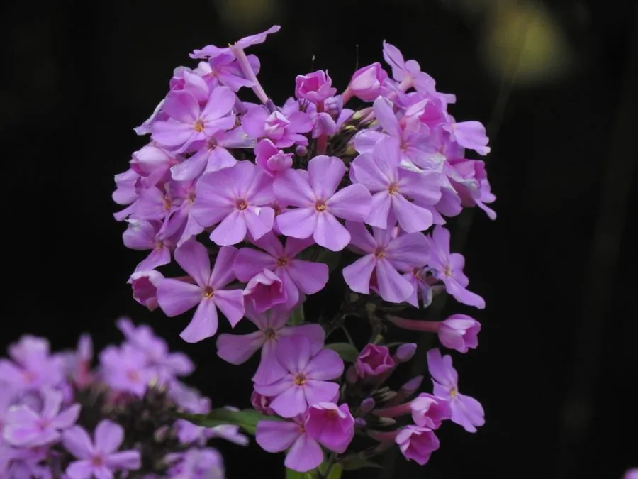

花卉与草本 · 植物界
宿根福禄考 Phlox paniculata

花荵科多年生草本，圆锥花序密集、花色柔和，花期长且带香气，是花境与庭院夏秋的经典花卉，原产北美。
- 分类
- 门被子植物门纲木兰纲目杜鹃花目科花荵科属福禄考属
- 栖息环境
- 北美东部湿润林地与草甸，喜光、喜湿、耐寒
- 地理分布
- 原产北美洲东部，中国各地庭园引种栽培
- 保护级别
- 暂无评估
物种志
宿根福禄考为花荵科福禄考属多年生草本，株高 60–120 厘米，茎直立。叶片长椭圆形至披针形，对生。圆锥花序顶生，由多数小花密集组成，花冠高脚碟状，5 裂，有粉、紫、红、白等色，喉部常有深色斑纹，花期 6–9 月；果实为蒴果。
宿根福禄考原产北美洲东部的湿润林地与草甸，喜阳光充足、湿润和排水良好的环境，耐寒性较强。它花序密集、花色柔和、花期长且带香气，是花境和庭院夏秋的经典花卉，也常作切花。栽培以分株和扦插为主，每 2–3 年分株一次可保持长势；夏季需保持土壤湿润，避免干旱导致下部叶片枯黄。
形态与习性
- 株高60–120 厘米，茎直立
- 花期6–9 月，花序密集
- 果期花后结蒴果
- 光照喜充足阳光，也耐半阴
- 水分喜湿润，忌积水
- 土壤疏松肥沃、排水良好的壤土
- 繁殖分株、扦插
- 主要用途花境、庭院点缀、切花
趣味知识
- 宿根福禄考的花冠喉部常有深色斑纹，是识别品种的特征。
- 它花序密集、花期长，是花境和庭院的经典花卉。
- 栽培中每 2–3 年分株一次，可保持植株长势。
- 夏季需保持土壤湿润，干旱时下部叶片容易枯黄。